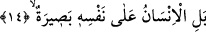
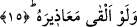

14. Artık insan, kendi kendinin şâhididir.
Artık insan kendi kendinin şâhidi olacak, yaptıklarına bizzat kendisi şâhidlik
edecektir. Nitekim bu mânâyı âyette yer alan “alâ” kelimesi ifâde ettiği gibi, ilerde
gelecek olan hâl cümlesi de belirtmektedir. İnsanoğlunun “besâra” ile vasıflandırılması
isnadda mecazdır. Tıpkı “Mucizelerimiz onların gözleri önüne serilince bu apaçık
bir büyüdür dediler.” (en-Neml, 27/13) âyetinde, âyetlerin ebsâr ile vasıflandırıldığı
gibi.
Bu âyet-i kerîmedeki “basiyra” kelimesi şâhid olarak tefsir edildiği gibi, aynun
basiyra/gören göz şeklinde tefsir edilmesi de mümkündür. Buna göre âyetin mânâsı artık
insan kendi kendinin gören gözüdür şeklinde olmuş olur. Bir başka ihtimal olarak “zu
basiyra” şeklinde anlamak da mümkündür. Buna göre artık insan kendi kendine karşı
basîret sâhibidir demek olur. Bir başka ihtimale göre “basiyra” kelimesinin sonundaki
“ta” harfi mübâlağa ifâde etmek içindir. Bu tıpkı “âlim” kelimesi yerine mübâlağa ifâde
etsin diye “alleme” dendiği gibidir.
Bu âyetin başındaki “bel” terakkî, aşağıdan yukarıya doğru yükselme ifâde eder. Buna
göre âyete mânâ vermek gerekirse; insanoğluna o gün amelleri bildirilir. Hattâ
başkasının bildirmesine, başkasının şâhidlik yapmasına gerek yok, çünkü insan o gün
bütün hâllerini ayrıntısıyla bilir, kendi nefsine karşı kendisi şâhidlik edecektir. İnsanın
organları bütün yaptıklarını dile gelerek anlatacaklardır.
Kâşânî bu âyet-i kerîmeyi şöyle anlamıştır: “Artık insan kendi kendinin şâhididir”,
apaçık bir huccettir, beyyinedir, ilmi ile birlikte yazılan amellerinin hey’etinin bakası
için, bunların kendi zâtında yerleşmesi, sıfatlarının kendi azâlarının sûretlerine
dönüşmesi için kendi nefsi üzerine şâhiddir. O hâlde insanın dışardan bir başkasının
haber vermesine artık ihtiyacı yoktur.
Orada dur! İsrafil’in sûrunun darbesi geldiğinde
Güzel sûretin kaybolur, çirkin sîretin âşikâr olur.
15. İsterse özürlerini sayıp döksün.
Yâni; insan kendi nefsine karşı şâhiddir. Organları, aleyhine şâhidlik edecek ve
onların şâhidlikleri kabul olunacaktır. İnsan mâzeret olarak kendisinden kabûlü mümkün
olan bütün mâzeretleri öne sürse ve bu mâzeretleriyle -sözgelimi- “ben yapmadım”
veya “şu sebebten yaptım” ya da “ben işlemedim” veya “bir engel çıktı” ya da
“fakirdim, çoluk çocuğum vardı”. Ya da “filancadan korkmuştum” veya “filanca kişinin